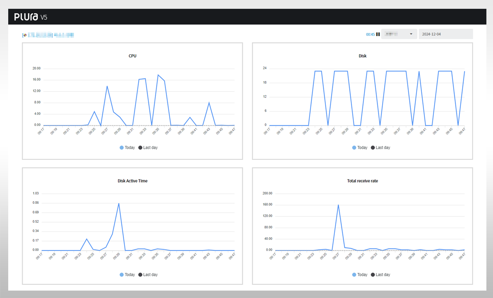
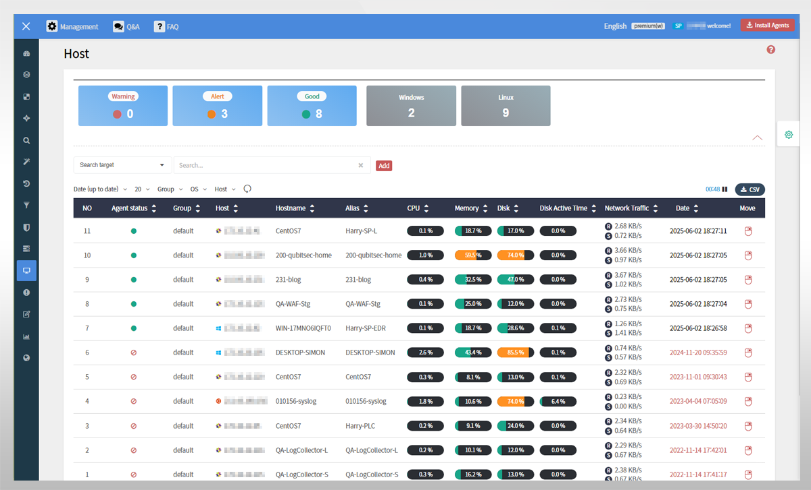

Original Web Request/Response Body Analysis
Detect and Block OWASP Top 10 and Evasive Payloads
Track Server Behavior After Web Shell/RCE
Correlate Process, File, and Account Anomalies
Integrated Analysis of Web, Server, and Account Logs
Zero-Day Detection and Response Automation
PLURA-WAF goes beyond simple signature matching and uses real web requests and response bodies as evidence for security decisions. When an attack starts on the web, server-side behavior, account events, and file changes must be analyzed together.
Capture the original evidence needed for attack decisions: URL, header, query, body, and response.
Evaluate not only known patterns, but also encoding, obfuscation, context escapes, and abnormal login flows.
Immediately block high-risk attacks and route events that require review into monitoring and analysis workflows.
Connect post-web-attack signs such as process execution, file creation, account login, and data exfiltration.
Defense Coverage
With cloud-based edge protection and traffic analysis,
it identifies massive request floods and automated bot access,
protecting service availability.
It detects uploads, command execution, suspicious script calls, and other
signs of web shells and remote command execution in real time.
Through EDR integration, it tracks process execution, file creation, and permission changes to verify follow-on behavior after a web attack.
By analyzing original request/response bodies and logs together,
it detects new vulnerability exploitation, encoding, obfuscation, and signature-evasive payloads early.
It combines AI analysis with policy rules to automatically block high-risk attacks and preserve analysis evidence.
It analyzes account takeover patterns in real time, including mass login attempts, spikes in failure rates, account rotation, and distributed IP access.
It combines anomaly detection and policy-based blocking across IP, account, session, and User-Agent signals.
It analyzes response bodies, download patterns, and sensitive data exposure signs to detect attempts to leak personal or confidential information.
It also monitors abnormal bulk queries, directory exposure, and error/debug information leakage.
It does not treat a web attack as a single isolated event,
but expands analysis into initial access, execution, persistence, privilege escalation, and data exfiltration stages.
Technology and Correlation


Operational Readiness
QubitSecurity Since
Minute Onboarding Ready
Hour Monitoring Flow
WAF·EDR·SIEM Layers
Attack Scenarios
Detect SQL injection, XSS, vulnerability scanning, and evasive payloads based on original requests.
Start ServiceAnalyze account rotation, mass login failures, and distributed IP access to block account takeover attacks.
Start ServiceDetect web shell uploads and command execution signs, then connect them to follow-on server behavior.
Start ServiceIdentify new attacks and signs of sensitive data leakage early through AI-based anomaly analysis.
Start Service{kind=link}
{kind=link}